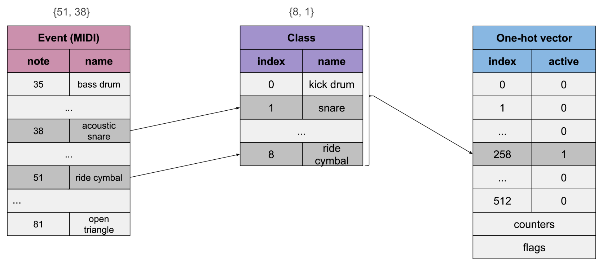

MIDI Visualization with
Alexandre DuBreuil (alexandredubreuil.com)
Alexandre DuBreuil
Software engineer, sound designer, book author, conference speaker and open source maintainer.
Introduction to VisualMIDI
Introduction

When writing Hands-on Music Generation with Magenta, I needed to show the music üéº...
- Generate easily HD graphs
- Analyse input data for machine learning models
- Analyse generated output data
Installing VisualMIDI
# Create a new virtual env for python 3.8
# (we could use other python env manager)
conda create --name creativecoding python=3.8
# Install visual-midi (which depends on pretty-midi)
pip install visual-midi
Usage - Creating plot from a MIDI file
In its most minimal form, we load a MIDI file using PrettyMIDI,
and show it using VisualMIDI.
from pretty_midi import PrettyMIDI
from visual_midi import Plotter
# Loading a file on disk using PrettyMidi,
# and show some information
pm = PrettyMIDI("./example-01.mid")
print(pm.instruments)
print(pm.instruments[0].notes)
print(pm.instruments[0].notes[0])
print(pm.get_tempo_changes())
# Plot the result using VisualMidi
plotter = Plotter()
plotter.show(pm, "/tmp/example-01.html")
Result - Creating plot from a MIDI file
Usage - Modifying appearance
We can also change the appearance using the Preset class (for visual stuff üëÅ) and the
Plotter class for plot content (number of bars, etc.).
from pretty_midi import PrettyMIDI
from visual_midi import Plotter
from visual_midi import Preset
# Loading a file on disk using PrettyMidi
pm = PrettyMIDI("./example-01.mid")
# Plot the result using VisualMidi, modifying
# the presentation with Preset
preset = Preset(
plot_width=1200,
plot_height=500,
show_beat=False,
axis_label_text_font_size="14px",
label_text_font_size="12px",
toolbar_location=None,
)
plotter = Plotter(
preset=preset,
plot_max_length_bar=4,
)
plotter.show(pm, "/tmp/example-02.html")
Result - Modifying appearance
Using VisualMIDI for machine learning
Creating a dataset
When training a model, we want to build a dataset that reflects what we want the machine to learn, VisualMIDI can help us check our results.
In Hands-on Music Generation with Magenta, Chapter 6, we automate the creation of a dataset üóÉ using the The Lakh MIDI Dataset.
Creating a dataset - Four on the floor rhythmics
In the first example of Chapter 6, we analyse the musical structure of the MIDI files and extract the drums patterns that we want.
python chapter_06_example_00.py \
--sample_size=100 \
--path_dataset_dir=/tmp/lmd_matched \
--path_output_dir=/tmp/lmd_drums \
--bass_drums_on_beat_threshold=0.75
Number of tracks: 116189, number of tracks in sample: 100, number of results: 11 (11.00%)
Time: 37.87666302899743
But we need to check the result! Lets check with VisualMIDI.
Verifying the dataset - Four on the floor rhythmics
Here's a small sample of our extracted dataset
Let's convert the MIDI files into plots
(easy peasy VisualMIDI!)
for file in $( ls ); do visual_midi $file; done
Encoding for DrumsRNN
When we encode for a deep neural network such as a RNN (e.g. the DrumsRNN ü•Å models from Magenta).
We encode each step as a "class", in a one-hot vector.
Encoding for DrumsRNN
Each step is a one-hot vector, for example for
a snare + ride on the same step.

Generating music - Repeating patterns
In the one-hot vector, we also encode a lookback üëà, which makes possible to learn repeating patterns.
We can verify the structure using VisualMIDI, nice!
Comparing generation parameters - temperature
High softmax temperature üî• (hott!)
Comparing generation parameters - temperature
Low softmax temperature ü•∂ (brrr!)
Integrating VisualMIDI with other tools
Integrating with note-seq from Magenta
The note-seq library is a protobuf representation of MIDI data, used by the models in Magenta.
from note_seq.protobuf import music_pb2
sequence = music_pb2.NoteSequence()
# Add notes to the sequence
sequence.notes.add(pitch=60, start_time=0.0, end_time=0.5, velocity=80)
sequence.notes.add(pitch=62, start_time=0.5, end_time=1.0, velocity=100)
# ...
# Add configuration
sequence.total_time = 8
sequence.tempos.add(qpm=60)
print(sequence)
tempos {
qpm: 60.0
}
notes {
pitch: 60
velocity: 80
start_time: 0
end_time: 0.5
}
Integrating with note-seq from Magenta
Which integrates nicely with VisualMIDI using PrettyMIDI as a pivot format.
from note_seq import midi_to_note_sequence
from note_seq.midi_io import note_sequence_to_pretty_midi
from note_seq.protobuf import music_pb2
from visual_midi import Plotter
# Convert "note-seq" -> "pretty-midi"
pretty_midi = note_sequence_to_pretty_midi(sequence)
print(pretty_midi)
# Convert "pretty-midi" -> "note-seq"
sequence = midi_to_note_sequence(pretty_midi)
print(sequence)
# Convert "pretty-midi" -> "visual-midi"
plotter = Plotter()
plotter.show(pretty_midi, "/tmp/example-01.html")
Integrating in notebooks
Notebooks are important tools for data scientists ü뮂Äçüî¨üë©‚Äçüî¨, well, VisualMIDI also integrates with notebooks, inserting an interactive plot!
Using VisualMIDI as a visual server (in progress)
For DreamBank, a 3 RNN network autonomous generative system ü§ñ, VisualMIDI is important to show the current state.
Conclusion (end!)
Thank you!
The Hands-on Music Generation with Magenta book üìï: packtpub.com/product/hands-on-music-generation-with-magenta/9781838824419
This presentation and original article üì∞ on VisualMIDI: alexandredubreuil.com/conferences/midi-visualization-with-visual-midi